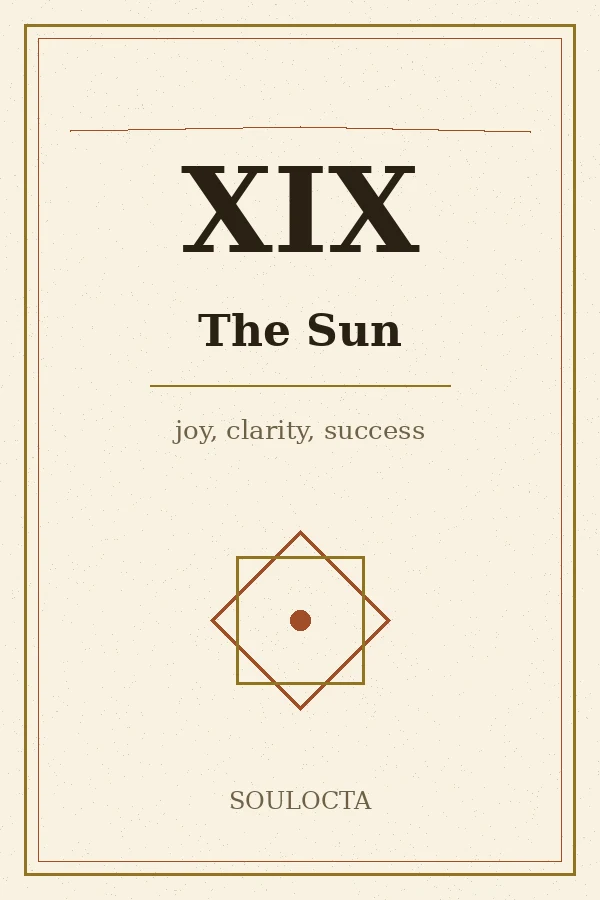

Per-arcana guide
The Sun — Arcana 19 of the Destiny Matrix
The Sun is arcana 19, and it means clarity: things going well in the open, not in secret. Wherever it sits, it brings warmth, directness and success that other people can see, and asks you to enjoy it without hiding it. Its lesson is to share the light instead of hoarding it.

What The Sun means, in one paragraph
The Sun is the brightest arcana, and its meaning is simpler than people expect: what is going well, said out loud. In the Destiny Matrix it appears where life is working — work that bears fruit, a relationship that is easy in daylight, a talent that other people notice before you do. The Sun does not hide its happiness, and that openness is the gift: direct people, honest praise, and the willingness to be seen trying. Its shadow is the same brightness turned up too high — needing applause, ignoring real problems because the mood is good, or saying yes to everything while the light is on you.
| Zone | Positive (+) | Negative (−) | Actionable shift |
|---|---|---|---|
| Centre | Warmth, optimism, clarity; people trust you quickly | Needing to be the centre; ignoring problems; burnout | Share one win with credit to others, and name one problem plainly |
| Money line | Visible success; public work; loyal customers and audiences | Over-promising in a good mood; spending the win before it lands | Put the first month of any windfall aside before celebrating |
| Love line | Joyful, open, generous; easy affection in daylight | Performative romance; needing constant reassurance | Do one unglamorous kind thing with no audience and no photo |
| Talent | Teaching, performing, hosting; making hard things feel easy | Showing off instead of teaching; talking over quieter people | Teach one thing this week and let the learner take the credit |
| Karmic tail | Learning to shine without needing applause | Repeating the need to be seen, in job after job | Ask who benefits from your work, not who noticed it |
Positive (+) vs negative (−): how The Sun shows up
In its positive state, The Sun looks like the person a room relaxes around. Think of a teacher whose classroom is loud in a good way, a nurse who remembers a patient's name and their daughter's exam, or a friend who celebrates your promotion as if it were their own. They are direct without being cruel, and they enjoy good news without needing to own it. In its negative state, the same warmth becomes a spotlight that never turns off: the colleague who tells the same success story at every lunch, the parent who posts a child's every grade, the performer who cannot stand an audience looking elsewhere. The difference is not how bright you are. It is whether the light is shared or hoarded.
The Sun in the money line and best careers
The Sun earns best in work that happens in public, where being seen is the point. A primary school teacher whose pupils run into the classroom is doing Sun work, and so is a wedding photographer who makes a nervous couple laugh, a community football coach who turns a losing team into a team that trains on time, or a market stallholder whose regulars come for the chat as much as the vegetables. Event hosts, public-relations spokespeople, children's entertainers, tour guides and solar-energy salespeople — selling literal sunlight — all live in this arcana. The money rule is to bank the sunshine: Sun people are offered extra work precisely when they are busiest, and the classic mistake is saying yes to all of it, then delivering half of it tired. Take the booking, raise the price a little, and keep one day a week with nothing on it.
The Sun in the love line and relationships
In love, The Sun is affection in daylight: hand-holding on the walk, not only the candlelit dinner. A healthy Sun relationship is generous and a little bit showy in a good way — birthdays remembered properly, good news shared first with each other, and arguments held in private while the public face stays kind. The shadow side is performance: romance that needs an audience, gifts that are really announcements, or a partner who needs to be told they are wonderful every morning before they can function. If this arcana is your centre, the question is whether you could be happy in the relationship on a rainy Tuesday with no one watching. If the answer is yes, the Sun is doing its real work.
How to turn The Sun from minus to plus
Turning this arcana around means sharing the light on purpose, five times. First, name one thing that is going well and thank, by name, one person who helped make it so. Second, say one honest thing about a problem you have been ignoring while the mood was good — a bill, a deadline, a tired body — and put a date on fixing it. Third, teach something you are good at to someone who will never pay you for it, and let them take the credit. Fourth, keep one day this week free of performing: no posts, no stories, no updates, and see what the quiet feels like. Fifth, celebrate properly, once, without apologising for it — a meal, a walk, a phone call to a parent — and then go back to work. The Sun goes plus when joy becomes generous instead of loud, and when success is measured by who else got warmer, not by who noticed.
Check where this energy sits in your free Destiny Matrix chart — enter your birth date and see whether The Sun is your centre, your talent, or your money line. If it is your centre, also read The Lovers, arcana 6, because joy shared with the right person lasts longer than joy performed alone, and your money line to see how your brightness pays.
Related guides
Keep reading: destiny matrix vs numerology · destiny matrix vs tarot · destiny matrix for beginners · destiny matrix FAQ · the Chariot, arcana 7 of the Destiny Matrix · Justice, arcana 8 of the Destiny Matrix · the Lovers, arcana 6 of the Destiny Matrix · the Devil, arcana 15 of the Destiny Matrix · the Sun, arcana 19 of the Destiny Matrix · karmic tail 18-6-6, Love Magic · karmic tail 15-20-5, the Rebel · karmic tail 9-9-18, Magical Knowledge · Destiny Matrix compatibility calculator · what is the Destiny Matrix · how to calculate the Destiny Matrix.
Frequently asked questions
What does The Sun mean in the Destiny Matrix?
The Sun is arcana 19, and it means joy and clarity. It marks the part of your chart where things go well in the open, and where warmth, directness and honest work pay off. People trust a Sun person quickly, because nothing about them is hidden.
Is The Sun always a good arcana to have?
Mostly, but not always. In its negative state it can mean needing applause, ignoring real problems while the mood is good, or burning out by saying yes to everything while the light is on you. The fix is to share the credit and name one problem plainly.
What does it mean if The Sun is my centre?
It means joy and visibility are the theme of your chart. Your growth comes from sharing the light generously instead of needing it all for yourself. Teach something, thank someone by name, and keep one day a week free of performing.
Does The Sun in my chart mean I will be rich or famous?
No — it cannot predict money or fame, and no chart can ever. It describes a pattern: directness, warmth and visible work, which often do well in public-facing jobs, but nothing is guaranteed, and this site makes no such promise.